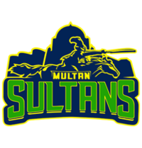
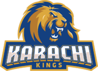
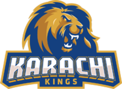
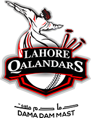
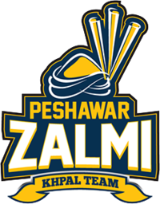
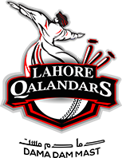
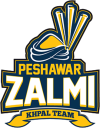

Your Favorite Team

 

 




Psl stand for "Pakistan Super League".Psl is one of the popular league in the world,because player come here to play cricket around the globe.
Psl is presented by HBL(Habib Bank Limited)in 2016.And the first Winner of HBL PSL is Islamabad United.In Start there are only 5 trams ;
1.Islamabad United
2.Peshawar Zalmi
3.Karachi Kings
4.Lahore Qualanders
5.Quetta Geladiators
But in 2018 the 6th team of HBL PSL lanches "Multan Sultan". PSl start in Febuarary till end of March,this is called season of HBL PSL in the world.
The Pakistan Super League (PSL) is a professional Twenty20 cricket league contested by six teams representing six cities of Pakistan. The league was founded in 2015 with five teams by the Pakistan Cricket Board (PCB). Instead of operating as an association of independently owned teams, the league is a single entity in which each franchise is owned and controlled by investors.